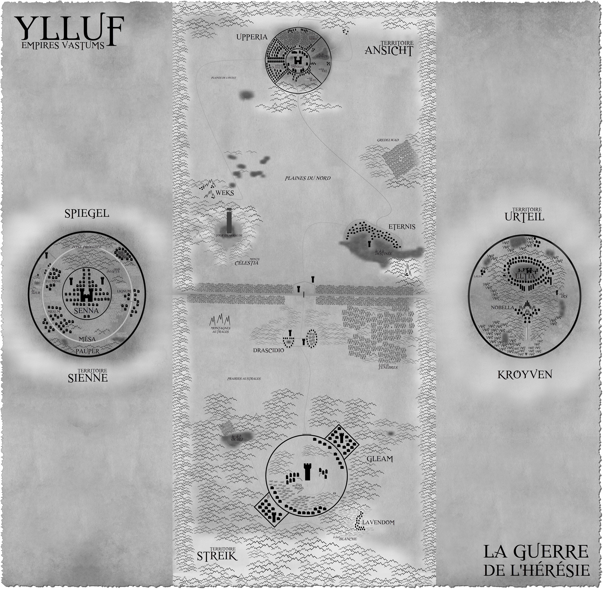
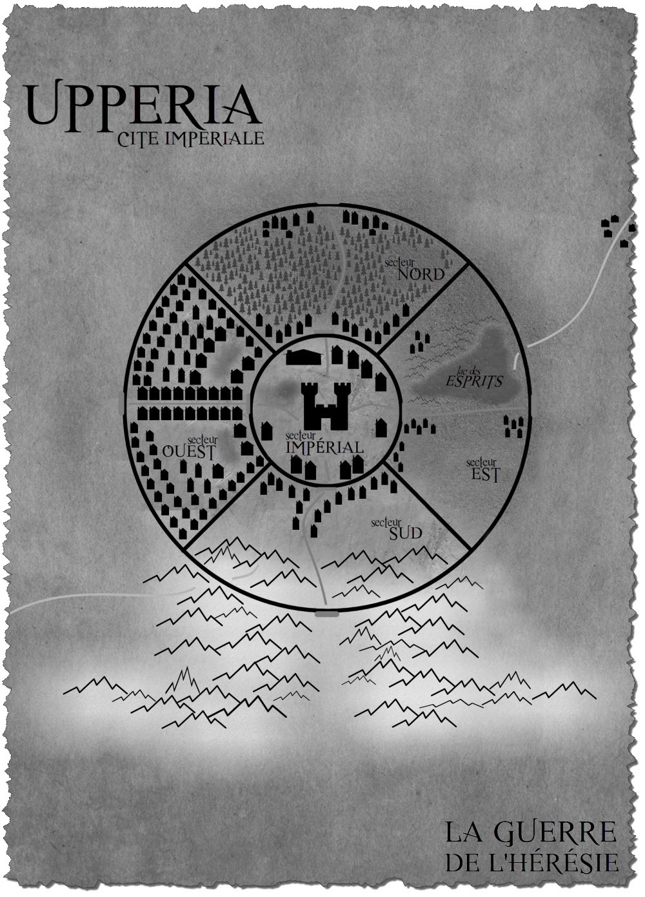
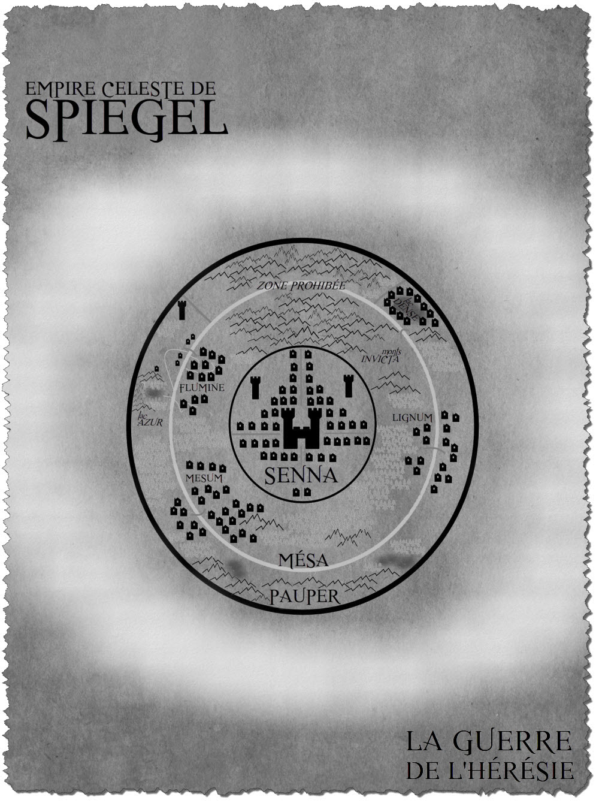
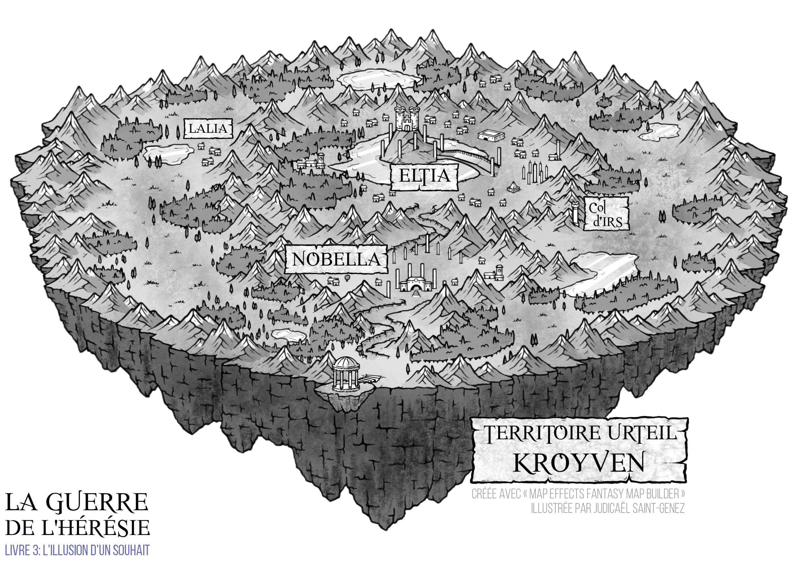

✦ ARCHIVES DES MONDES ✦
Ylluf
Les terres Vastums
Carte des mondes

✧ Cliquer sur l’image pour agrandir la carte✧ Registre ✧
- Nom
- Ylluf
- Type
- Territoire
- Peuple
- Vastums
- Localisation
- Reculé
- Population
- ~1'000'000
- Empires
- Streik, Sienne, Ansicht et Urteil
Présentation
Ylluf est le nom de la planète des Vastums et représente l’ensemble des territoires des mortels. Il comprend l’Empire Streik au sud, l’Empire Sienne à l’ouest, l’Empire Ansicht au nord et l’Empire Urteil à l’est. Ces terres, à la fois arides et luxuriantes, sont parcourues de forêts, de lacs et de montagnes.
Apparences
Un fleuve gigantesque traverse le centre d’Ylluf. Il sépare le nord du sud et forme une frontière entre les Ansichts et les Streiks. Les deux îles flottantes des Urteils et des Siennes appartiennent également à ses territoires.
Ylluf se distingue également par plusieurs lieux d’une grande importance historique, notamment les Monts Nods, situés au sud-est des terres Ansichts, la Tour d’Émeraude, nichée au cœur des Monts Célestia et témoin de la fin de la Guerre Originelle, ainsi que la Forêt de Docéliande, au nord-est. À ces sites emblématiques s’ajoutent la Forêt des Ténèbres et la Forêt Blanche, toutes deux marquées par un passé étroitement lié à la Sphère de l’Hérésie.
Histoire
Lors du combat originel opposant Nécro à l’Espoir des Rois, Ylluf n’était encore qu’un monde dépourvu de vie. Leur affrontement titanesque souleva des montagnes et donna naissance à la vie sous la forme d’une pluie divine. Depuis lors, les Vastums peuplent ces terres.
Le chemin menant à ce monde s’étant perdu dans les méandres du temps, Ylluf incarne à la fois un mythe et un pan essentiel de l’histoire des seize races originelles. Les Vastums étant nés de la Guerre Originelle en l’an 0, ce monde conserve un héritage profondément lié à la chute de Nécro et à la formation de la Sphère de l’Hérésie. Au fil des millénaires, Ylluf fut le théâtre de nombreux événements majeurs, notamment l’attaque de l’Archange de la Mort lors du troisième Funus, en l’an 4'950, le massacre du Vespertilio au dernier jour de l’an 4'999, ainsi que l’assaut de l’Archange de la Réalité devant les murs d’Upperia, en l’an 5'010.
L’histoire d’Ylluf est également jalonnée d’innombrables conflits, nourris par les ambitions territoriales et les désirs d’expansion des Vastums. Toutefois, ses frontières sont demeurées inchangées depuis l’annexion des terres Ansichts par l’Empereur de la Haine, Utteros Streik, en l’an 5'010, événement qui marqua la dernière modification de sa carte politique.
Apparition
Ylluf, territoire des Vastums, apparaît dans la préface du premier livre de La Guerre de l’Hérésie, « S’estomper vers les Ténèbres ».
Upperia
La Capitale du Nord
Upperia, capitale du nord d’Ylluf et de l’ancien Empire Ansicht, se distingue par une architecture mêlant les influences antiques et médiévales. Sa population dépasse les 200’000 habitants.
La cité s’organise autour de deux enceintes concentriques. La muraille extérieure, d’un diamètre de sept kilomètres, protège quatre quartiers civils, tandis qu’une seconde enceinte, d’un kilomètre de diamètre, abrite l’ancien palais Ansicht, devenu le bastion de l’Empereur Streik. Quatre murs relient ces deux fortifications, divisant la ville en quatre quartiers distincts, nord, sud, est et ouest.
Fondée par les Ansichts durant l’Ère de l’Incertitude, Upperia résista pendant des siècles aux assauts des autres peuples, jusqu’à l’extermination des Ansichts par le Vespertilio. À la suite de l’invasion menée par Utteros Streik, la cité passa sous son autorité et devint la capitale administrative des Streiks.
Upperia fait sa première apparition dans le chapitre 1, « La Mort aux Ailes Blanches », du Livre 1, « S’estomper vers les Ténèbres ».

Spiegel
L’Île Sainte
Spiegel, île flottante de l’Empire Sienne, se dresse à l’ouest d’Ylluf. Au cœur de cette terre luxuriante, parsemée de forêts et de lacs, se trouve le Senna, sa capitale. L’île abrite une population de plus de 175’000 habitants.
Entourée d’une imposante chaîne de montagnes, Spiegel se divise en trois territoires distincts : le Senna, en son centre, suivi du Mésa, puis du Pauper, à son extrémité. Chacun de ces territoires reflète la hiérarchie sociale de l’île, déterminant le statut et le rang de ses habitants. Au nord du lac Azur s’étend la mystérieuse Zone Prohibée, qui traverse les territoires du Pauper et du Mésa jusqu’à la chaîne des monts Invicta.
Spiegel fut érigée par les sages Urteils lors du Traité Originel grâce au pouvoir de la Sphère de l’Hérésie. Depuis sa création, l’île attise la convoitise des Fantasmas, déterminés à retrouver l'artefact. Face à cette menace, les forces Siennes de l’Apocalypsia ont été créées et veillent à la protection de l'île.
Mentionnée dès la préface, Spiegel fait sa première apparition au chapitre 8, « L’Épéiste aux Yeux d’Argent », du Livre 1, « S’estomper vers les Ténèbres ».

Kroyven
L’Île de la Sagesse
Kroyven est l’île volante de l’Empire Urteil, à l’est d’Ylluf. Sa capitale, Eltia, se dresse au cœur de ce territoire luxuriant de plus de 250’000 habitants.
Protégée par des chaînes de montagnes, l’île comprend trois secteurs : des terres sauvages qui approvisionnent les villes, Nobella, son centre économique, et Eltia, où se trouvent l’université, les usines et le château onirique de l’Impératrice.
Érigée par les sages Urteils lors du Traité Originel grâce à la Sphère de l’Hérésie, Kroyven fut attaquée pendant des siècles par les Fantasmas. Un Empereur finit par condamner la faille pour protéger son peuple, au détriment des Siennes.
Kroyven est citée dans la préface et apparaît au chapitre 23, « Un Bleu si Profond », du Livre 3, « L’Illusion d’un Souhait ».


✦ POURSUIVRE DANS LES ARCHIVES ✦